Changes in PRIMAP-hist v2.6_final compared to v2.5.1_final for Denmark
2024-09-24
Johannes Gütschow
Change analysis for Denmark for PRIMAP-hist v2.6_final compared to v2.5.1_final
Overview over emissions by sector and gas
The following figures show the aggregate national total emissions excluding LULUCF AR6GWP100 for the country reported priority scenario. The dotted linesshow the v2.5.1_final data.
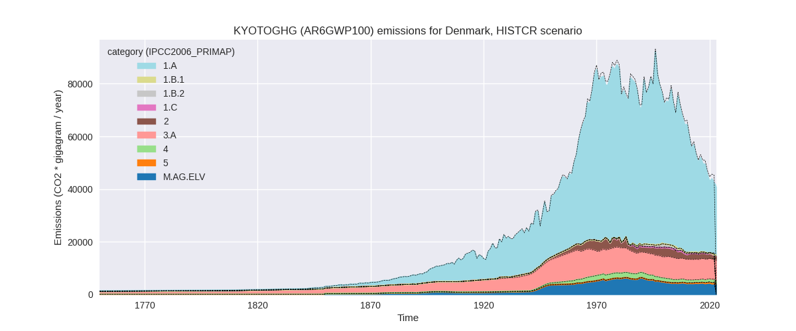
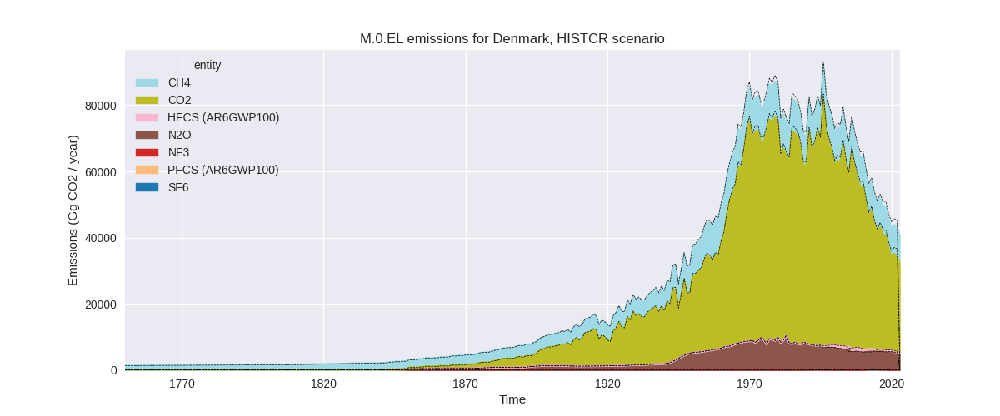
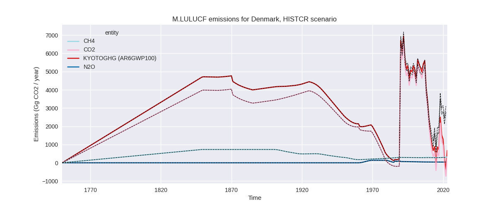
The following figures show the aggregate national total emissions excluding LULUCF AR6GWP100 for the third party priority scenario. The dotted linesshow the v2.5.1_final data.
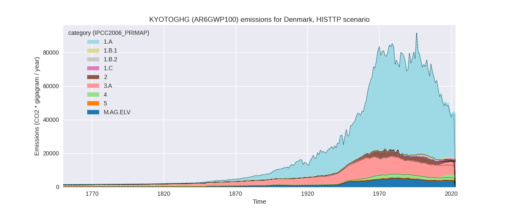
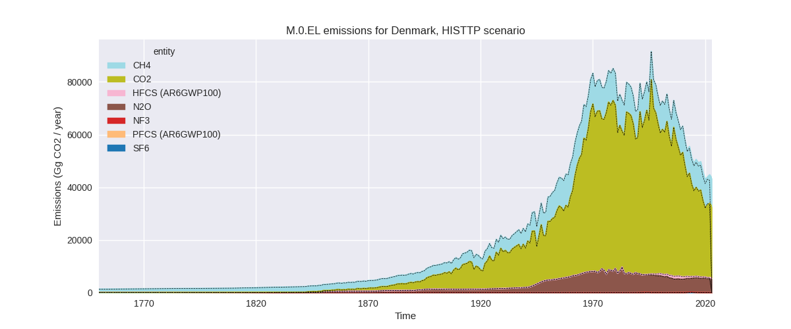
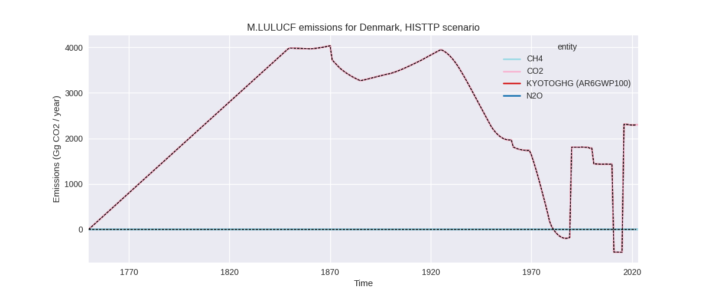
Overview over changes
In the country reported priority scenario we have the following changes for aggregate Kyoto GHG and national total emissions excluding LULUCF (M.0.EL):
- Emissions in 2022 have changed by -6.8%% (-3059.09 Gg CO2 / year)
- Emissions in 1990-2022 have changed by -2.1%% (-1407.42 Gg CO2 / year)
In the third party priority scenario we have the following changes for aggregate Kyoto GHG and national total emissions excluding LULUCF (M.0.EL):
- Emissions in 2022 have changed by 4.9%% (2087.63 Gg CO2 / year)
- Emissions in 1990-2022 have changed by 0.5%% (333.54 Gg CO2 / year)
Most important changes per scenario and time frame
In the country reported priority scenario the following sector-gas combinations have the highest absolute impact on national total KyotoGHG (AR6GWP100) emissions in 2022 (top 5):
- 1: 1.A, CO2 with -2162.28 Gg CO2 / year (-7.5%)
- 2: M.AG.ELV, N2O with -530.85 Gg CO2 / year (-12.0%)
- 3: 2, N2O with 252.45 Gg CO2 / year (1287.7%)
- 4: 3.A, CH4 with -215.86 Gg CO2 / year (-3.0%)
- 5: 2, CO2 with -118.89 Gg CO2 / year (-7.9%)
In the country reported priority scenario the following sector-gas combinations have the highest absolute impact on national total KyotoGHG (AR6GWP100) emissions in 1990-2022 (top 5):
- 1: 1.A, CO2 with -1389.52 Gg CO2 / year (-2.8%)
- 2: M.AG.ELV, N2O with -181.11 Gg CO2 / year (-3.9%)
- 3: 1.B.2, CH4 with 150.93 Gg CO2 / year (72.2%)
- 4: 2, N2O with 132.93 Gg CO2 / year (36.8%)
- 5: 2, HFCS (AR6GWP100) with -40.48 Gg CO2 / year (-6.2%)
In the third party priority scenario the following sector-gas combinations have the highest absolute impact on national total KyotoGHG (AR6GWP100) emissions in 2022 (top 5):
- 1: 4, CH4 with 1570.60 Gg CO2 / year (108.9%)
- 2: 1.A, CO2 with 496.22 Gg CO2 / year (1.9%)
- 3: 2, SF6 with 18.34 Gg CO2 / year (46.8%)
- 4: 5, N2O with 17.22 Gg CO2 / year (19.2%)
- 5: 4, N2O with -14.68 Gg CO2 / year (-6.4%)
In the third party priority scenario the following sector-gas combinations have the highest absolute impact on national total KyotoGHG (AR6GWP100) emissions in 1990-2022 (top 5):
- 1: 4, CH4 with 350.04 Gg CO2 / year (20.7%)
- 2: 1.A, CO2 with -10.83 Gg CO2 / year (-0.0%)
- 3: 1.B.2, CO2 with -5.95 Gg CO2 / year (-1.9%)
- 4: 4, N2O with -4.35 Gg CO2 / year (-2.4%)
- 5: 1.B.1, CO2 with 2.79 Gg CO2 / year (55.0%)
Notes on data changes
Here we list notes explaining important emissions changes for the country. ’' means that the following text only applies to the TP time series, while means that it only applies to the CR scenario. Otherwise the note applies to both scenarios.
- We have added EEA 2024 inventory data.
- Energy CO2 emissions are lower in 2022 and cumulatively because EEA shows lower emissions than CRF2023 (CR). This is also the case for N2O from M.AG.ELV
- N2O emissions from chemical industry (2.B) are higher in 2022 and cumulatively (CR) because in EEA2024 data is missing for 2055 and later years so EDGAR data is used for these years which is higher than CRF2023.
- 1.B.2 CH4 is also higher in EEA2024 than CRF2023
- In the TP scenario energy CO2 is higher for 2022 due to updated EI data.
- Changes in sector 4 are due to the removal of FAOSTAT data (TP).
Changes by sector and gas
For each scenario and time frame the changes are displayed for all individual sectors and all individual gases. In the sector plot we use aggregate Kyoto GHGs in AR6GWP100. In the gas plot we usenational total emissions without LULUCF. ## country reported scenario
2022
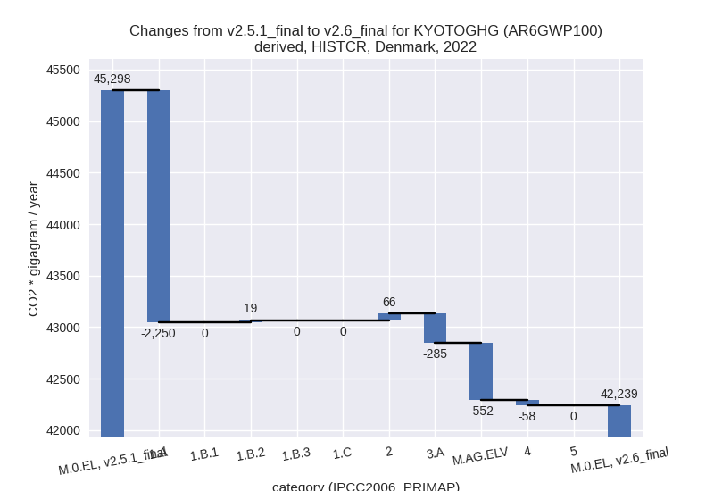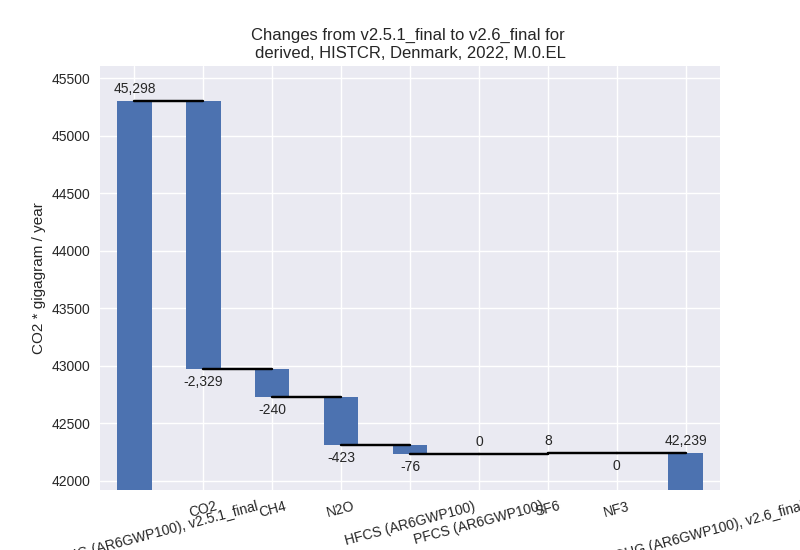
1990-2022
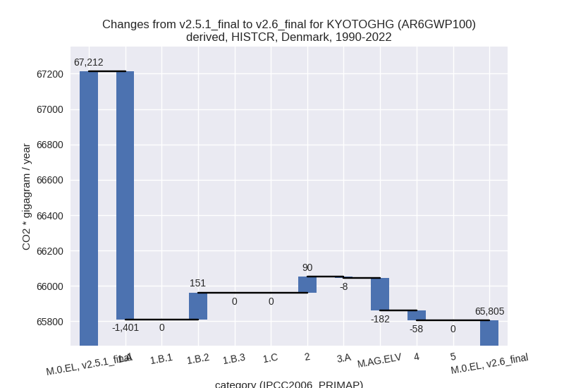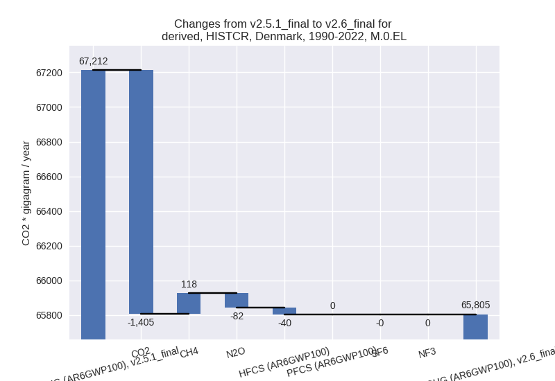
third party scenario
2022
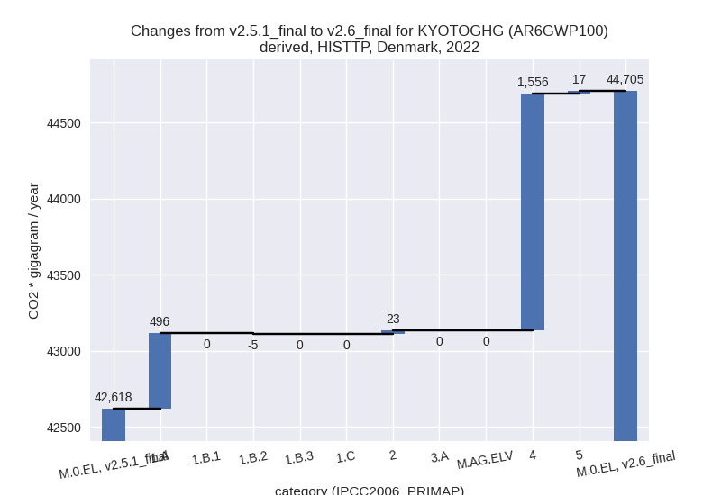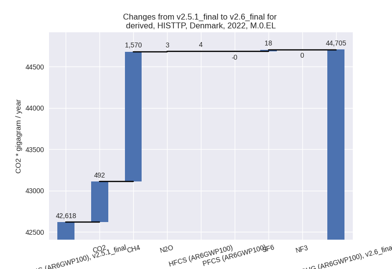
1990-2022
 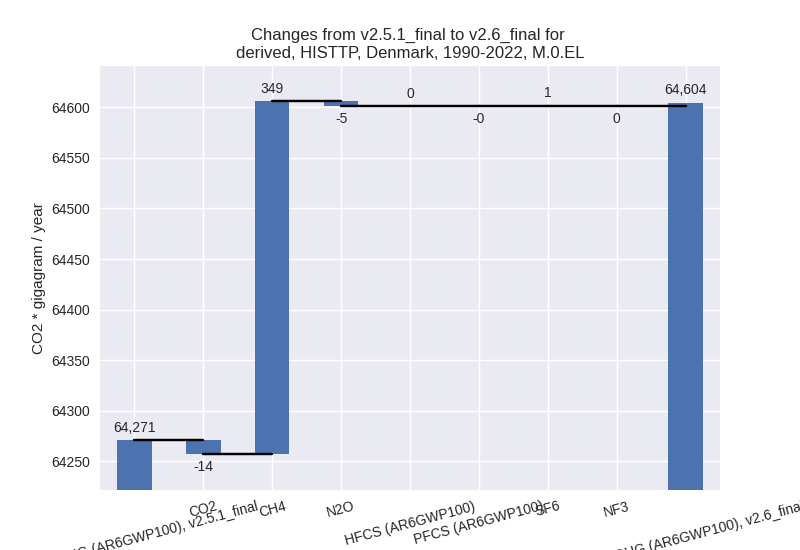
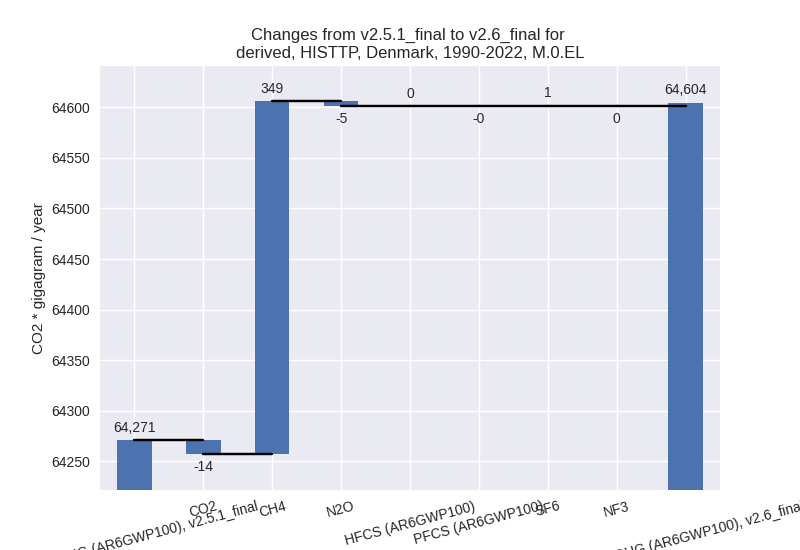
Detailed changes for the scenarios:
country reported scenario (HISTCR):
Most important changes per time frame
For 2022 the following sector-gas combinations have the highest absolute impact on national total KyotoGHG (AR6GWP100) emissions in 2022 (top 5):
- 1: 1.A, CO2 with -2162.28 Gg CO2 / year (-7.5%)
- 2: M.AG.ELV, N2O with -530.85 Gg CO2 / year (-12.0%)
- 3: 2, N2O with 252.45 Gg CO2 / year (1287.7%)
- 4: 3.A, CH4 with -215.86 Gg CO2 / year (-3.0%)
- 5: 2, CO2 with -118.89 Gg CO2 / year (-7.9%)
For 1990-2022 the following sector-gas combinations have the highest absolute impact on national total KyotoGHG (AR6GWP100) emissions in 1990-2022 (top 5):
- 1: 1.A, CO2 with -1389.52 Gg CO2 / year (-2.8%)
- 2: M.AG.ELV, N2O with -181.11 Gg CO2 / year (-3.9%)
- 3: 1.B.2, CH4 with 150.93 Gg CO2 / year (72.2%)
- 4: 2, N2O with 132.93 Gg CO2 / year (36.8%)
- 5: 2, HFCS (AR6GWP100) with -40.48 Gg CO2 / year (-6.2%)
Changes in the main sectors for aggregate KyotoGHG (AR6GWP100) are
- 1: Total sectoral emissions in 2022 are 27413.56 Gg
CO2 / year which is 64.9% of M.0.EL emissions. 2022 Emissions have
changed by -7.5% (-2230.47 Gg CO2 /
year). 1990-2022 Emissions have changed by -2.5% (-1249.75 Gg CO2 / year). For 2022
the changes per gas
are:
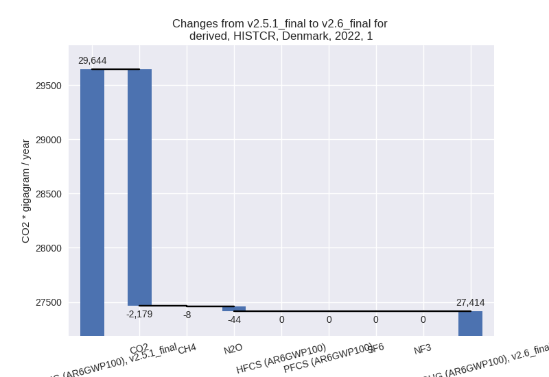
For 1990-2022 the changes per gas are:
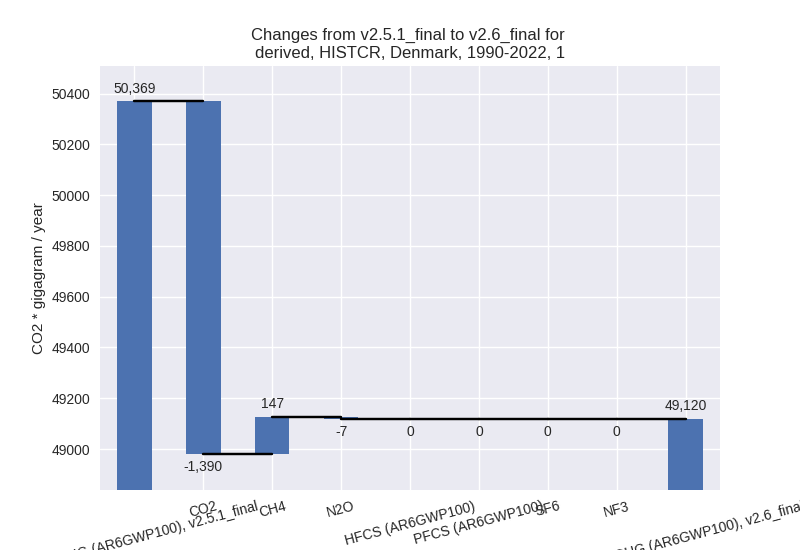
The changes come from the following subsectors:- 1.A: Total sectoral emissions in 2022 are 27220.47
Gg CO2 / year which is 99.3% of category 1 emissions. 2022 Emissions
have changed by -7.6% (-2249.53 Gg
CO2 / year). 1990-2022 Emissions have changed by -2.8% (-1400.61 Gg CO2 / year). For 2022
the changes per gas
are:
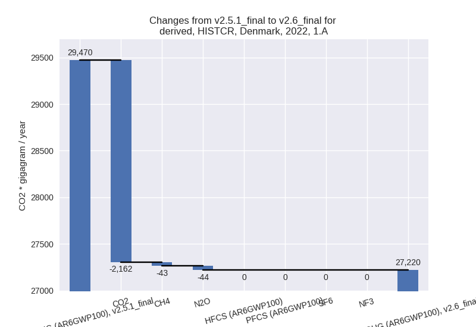
For 1990-2022 the changes per gas are:
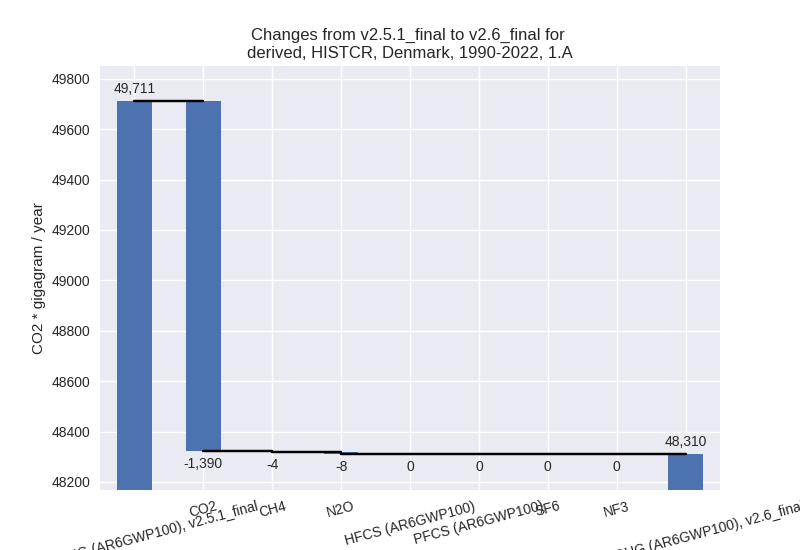
There is no subsector information available in PRIMAP-hist. - 1.B.2: Total sectoral emissions in 2022 are 193.08
Gg CO2 / year which is 0.7% of category 1 emissions. 2022 Emissions have
changed by 10.9% (19.05 Gg CO2 /
year). 1990-2022 Emissions have changed by 22.9% (150.86 Gg CO2 / year). For 2022 the
changes per gas
are:
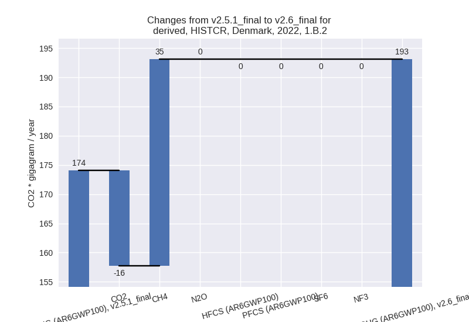
For 1990-2022 the changes per gas are:
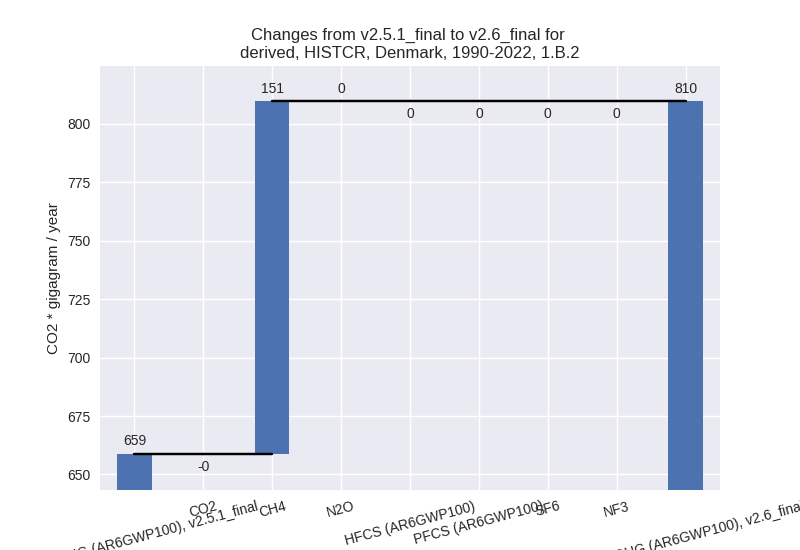
There is no subsector information available in PRIMAP-hist.
- 1.A: Total sectoral emissions in 2022 are 27220.47
Gg CO2 / year which is 99.3% of category 1 emissions. 2022 Emissions
have changed by -7.6% (-2249.53 Gg
CO2 / year). 1990-2022 Emissions have changed by -2.8% (-1400.61 Gg CO2 / year). For 2022
the changes per gas
are:
- 2: Total sectoral emissions in 2022 are 1977.19 Gg
CO2 / year which is 4.7% of M.0.EL emissions. 2022 Emissions have
changed by 3.5% (66.07 Gg CO2 /
year). 1990-2022 Emissions have changed by 3.4% (90.27 Gg CO2 / year). For 2022 the
changes per gas
are:
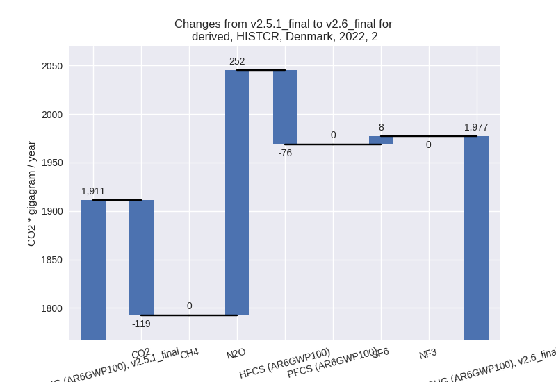
For 1990-2022 the changes per gas are:
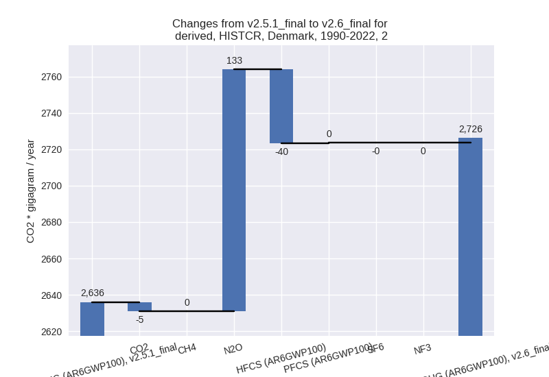 - M.AG: Total sectoral emissions in 2022 are 11624.45
Gg CO2 / year which is 27.5% of M.0.EL emissions. 2022 Emissions have
changed by -6.7% (-837.10 Gg CO2 /
year). 1990-2022 Emissions have changed by -1.5% (-190.26 Gg CO2 / year). For 2022
the changes per gas
are:
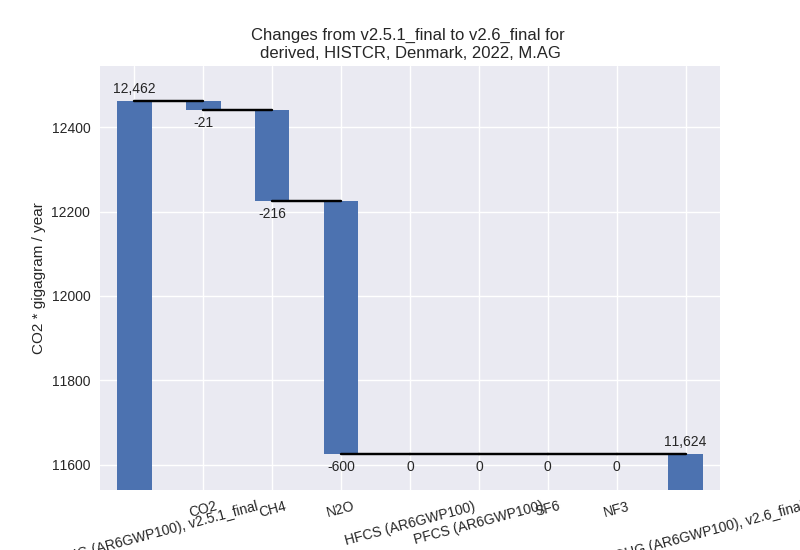
The changes come from the following subsectors:- 3.A: Total sectoral emissions in 2022 are 7478.80
Gg CO2 / year which is 64.3% of category M.AG emissions. 2022 Emissions
have changed by -3.7% (-285.19 Gg
CO2 / year). 1990-2022 Emissions have changed by -0.1% (-8.24 Gg CO2 / year). For 2022 the
changes per gas
are:
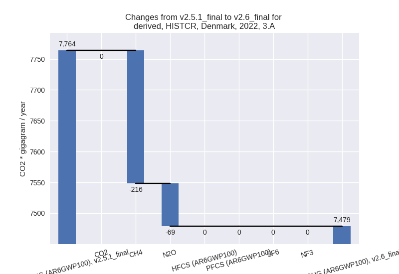
There is no subsector information available in PRIMAP-hist. - M.AG.ELV: Total sectoral emissions in 2022 are
4145.65 Gg CO2 / year which is 35.7% of category M.AG emissions. 2022
Emissions have changed by -11.7%
(-551.91 Gg CO2 / year). 1990-2022 Emissions have changed by -3.7% (-182.03 Gg CO2 / year). For 2022
the changes per gas
are:
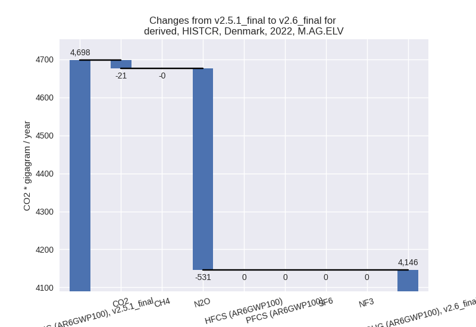
For 1990-2022 the changes per gas are:
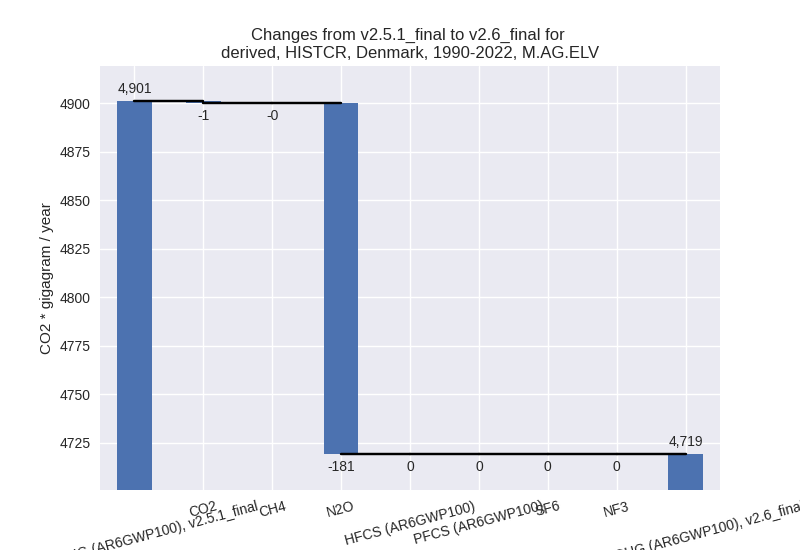
There is no subsector information available in PRIMAP-hist.
- 3.A: Total sectoral emissions in 2022 are 7478.80
Gg CO2 / year which is 64.3% of category M.AG emissions. 2022 Emissions
have changed by -3.7% (-285.19 Gg
CO2 / year). 1990-2022 Emissions have changed by -0.1% (-8.24 Gg CO2 / year). For 2022 the
changes per gas
are:
- 4: Total sectoral emissions in 2022 are 1223.65 Gg
CO2 / year which is 2.9% of M.0.EL emissions. 2022 Emissions have
changed by -4.5% (-57.59 Gg CO2 /
year). 1990-2022 Emissions have changed by -4.3% (-57.68 Gg CO2 / year). For 2022 the
changes per gas
are:
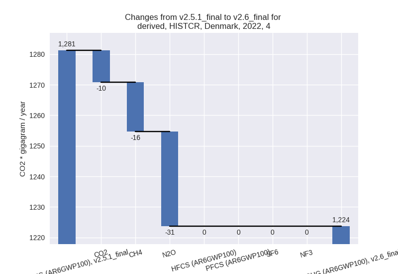
For 1990-2022 the changes per gas are:
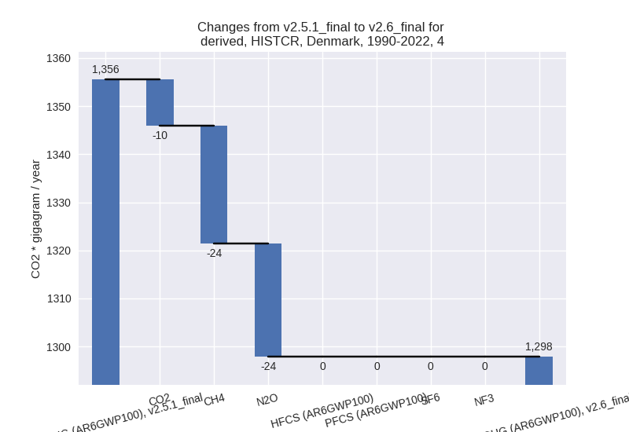 - 5: No data
third party scenario (HISTTP):
Most important changes per time frame
For 2022 the following sector-gas combinations have the highest absolute impact on national total KyotoGHG (AR6GWP100) emissions in 2022 (top 5):
- 1: 4, CH4 with 1570.60 Gg CO2 / year (108.9%)
- 2: 1.A, CO2 with 496.22 Gg CO2 / year (1.9%)
- 3: 2, SF6 with 18.34 Gg CO2 / year (46.8%)
- 4: 5, N2O with 17.22 Gg CO2 / year (19.2%)
- 5: 4, N2O with -14.68 Gg CO2 / year (-6.4%)
For 1990-2022 the following sector-gas combinations have the highest absolute impact on national total KyotoGHG (AR6GWP100) emissions in 1990-2022 (top 5):
- 1: 4, CH4 with 350.04 Gg CO2 / year (20.7%)
- 2: 1.A, CO2 with -10.83 Gg CO2 / year (-0.0%)
- 3: 1.B.2, CO2 with -5.95 Gg CO2 / year (-1.9%)
- 4: 4, N2O with -4.35 Gg CO2 / year (-2.4%)
- 5: 1.B.1, CO2 with 2.79 Gg CO2 / year (55.0%)
Changes in the main sectors for aggregate KyotoGHG (AR6GWP100) are
- 1: Total sectoral emissions in 2022 are 28178.15 Gg CO2 / year which is 63.0% of M.0.EL emissions. 2022 Emissions have changed by 1.8% (491.59 Gg CO2 / year). 1990-2022 Emissions have changed by -0.0% (-13.99 Gg CO2 / year).
- 2: Total sectoral emissions in 2022 are 2096.30 Gg CO2 / year which is 4.7% of M.0.EL emissions. 2022 Emissions have changed by 1.1% (22.63 Gg CO2 / year). 1990-2022 Emissions have changed by 0.1% (2.42 Gg CO2 / year).
- M.AG: Total sectoral emissions in 2022 are 11092.87 Gg CO2 / year which is 24.8% of M.0.EL emissions. 2022 Emissions have changed by 0.0% (0.00 Gg CO2 / year). 1990-2022 Emissions have changed by 0.0% (0.00 Gg CO2 / year).
- 4: Total sectoral emissions in 2022 are 3230.96 Gg
CO2 / year which is 7.2% of M.0.EL emissions. 2022 Emissions have
changed by 92.9% (1556.18 Gg CO2 /
year). 1990-2022 Emissions have changed by 18.4% (345.71 Gg CO2 / year). For 2022 the
changes per gas
are:
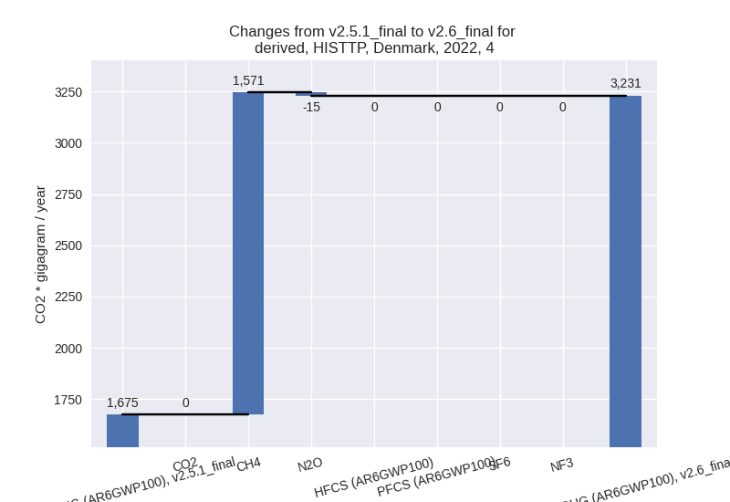
For 1990-2022 the changes per gas are: - 5: Total sectoral emissions in 2022 are 107.08 Gg
CO2 / year which is 0.2% of M.0.EL emissions. 2022 Emissions have
changed by 19.2% (17.22 Gg CO2 /
year). 1990-2022 Emissions have changed by -0.3% (-0.60 Gg CO2 / year). For 2022 the
changes per gas
are:
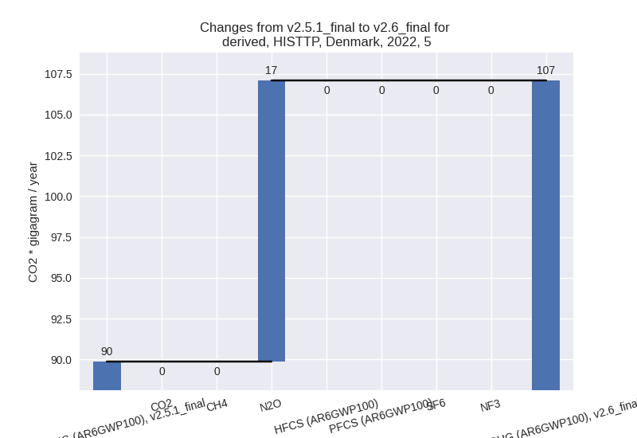